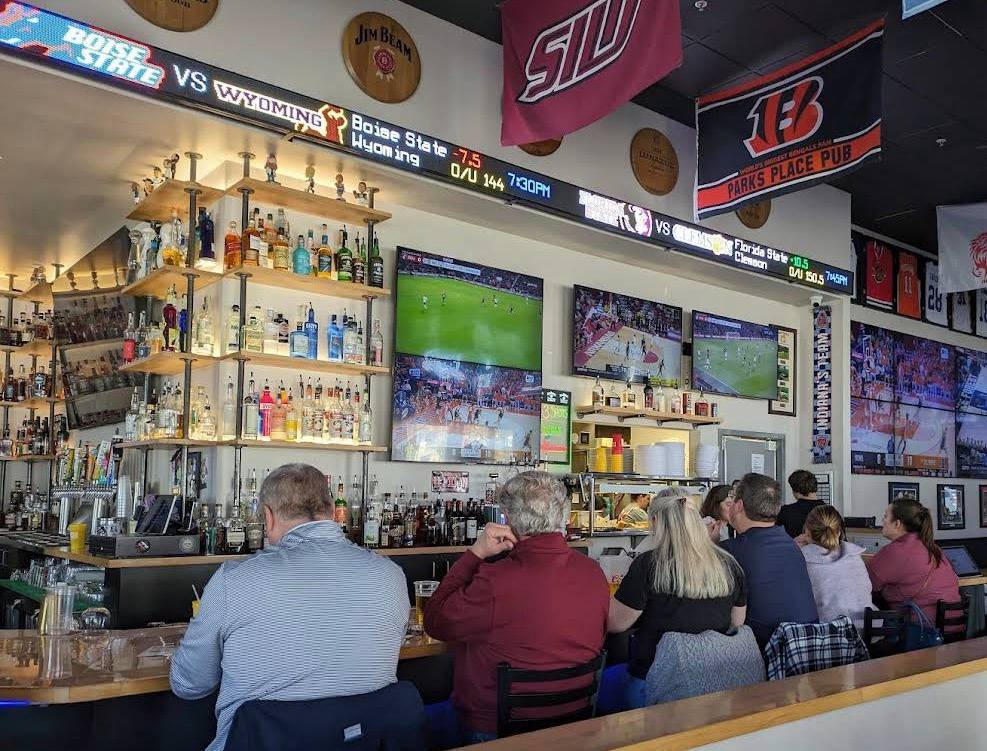
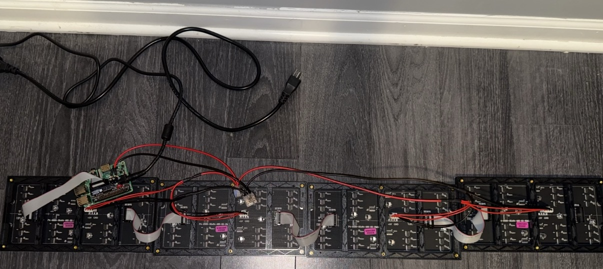
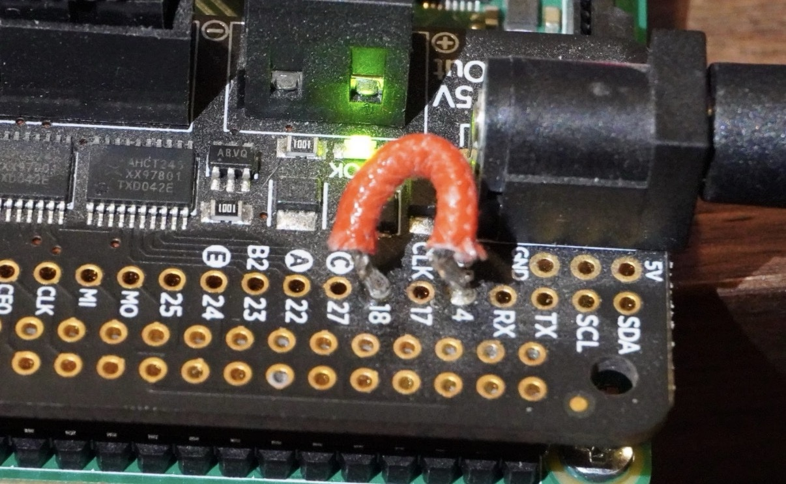
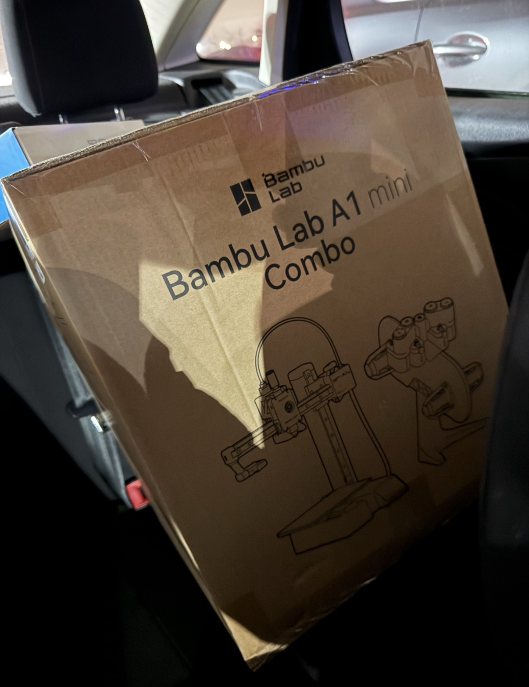
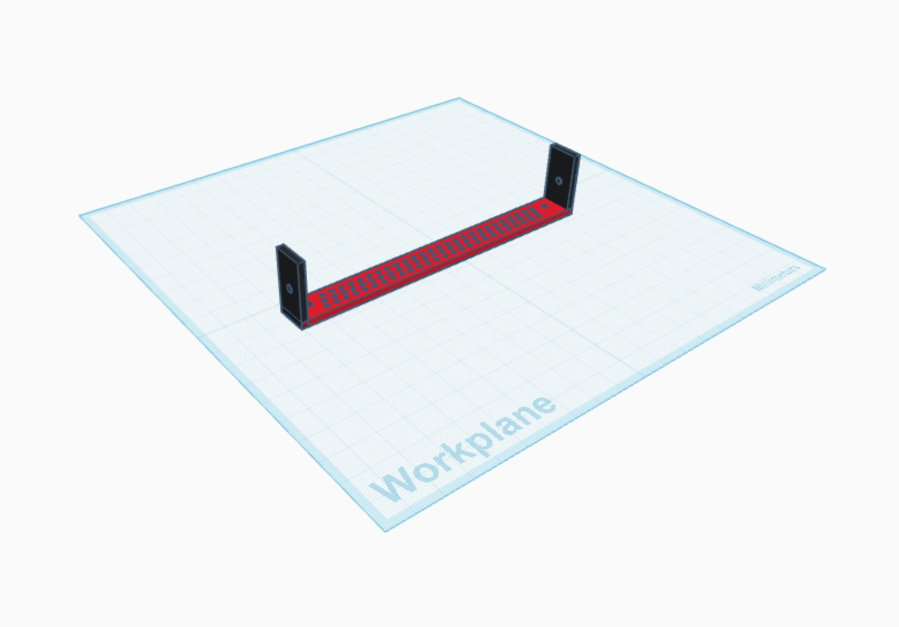

LED Matrix Sports Scrolling Scoreboard
Overview
This project allowed me to develop and improve upon a mix of skills: woodworking, 3D printing, electronics, and coding. I built a custom wooden enclosure to house the LED matrix panels, designed and 3D printed parts to mount the hardware inside it, set up a Raspberry Pi to drive the display, and wrote code to pull real-time data from ESPN's API across several sports and leagues (NFL, NBA, College Basketball, College Football, NHL, MLB, and Soccer).
Inspiration

The idea for this project started at Parks Place Pub, a bar back in my hometown of Fishers, Indiana. It's one of my favorite spots to grab a beer and catch up with friends or family whenever I'm back in town. Every time I walked in, I'd end up staring at the scrolling sports ticker running across the top of the bar, showing live scores from whatever games were on. I always thought it was such a cool way to keep track of scores without needing to flip between different TVs, and I wanted to build my own version of it.
Credit Where It's Due
Before getting into the build, I want to give credit where it's due: a lot of this project was made possible by ChuckBuilds, who put together detailed documentation on his GitHub repo for building this exact kind of display. I leaned on his guide heavily throughout the process, and honestly, I would've been lost without it.
Assembling the Display
Using Chuck's guide, I knew exactly what parts I needed to get started. Chuck's own example used two panels, but I wanted to go bigger and build a longer display, so I ordered four 64x32 LED matrix panels from Adafruit with a 4mm pixel pitch to line up horizontally. I also got a Raspberry Pi and an Adafruit RGB Matrix Bonnet/HAT to connect everything together. Most of these parts ended up being part of my Christmas gifts, courtesy of my girlfriend.
Once I got all the parts and started assembling everything, I quickly realized I'd bitten off more than I was ready to chew. First, setting up the Raspberry Pi meant using the terminal on my PC and running Linux commands, which I wasn't very comfortable with. Luckily, Chuck's guide had a one-time setup command I could run on the Pi that handled most of it for me.
Next, I had to figure out how to daisy chain and power all four displays 
Even after I got the display powered on, it was flickering badly. Back to Chuck's guide and the internet I went, and I learned the fix required modifying my RGB Matrix Bonnet by soldering a jumper between two of its pins 
All in, this part of the process took about a month. It was a lot of trial and error, and a lot of leaning on people who knew more than me about electronics. Eventually, I got it working, which left me with one more problem: where was I actually going to put this thing?
A Quick Detour
With the display working, I turned my attention to the physical build. As it was, the four panels weren't connected to each other and had no way of standing up side by side. I realized I needed custom-sized brackets to hold the screws that connect the panels together, but I couldn't find anywhere that sold brackets in the exact size I needed. After some digging online, I found that other people had run into the same problem and solved it by 3D printing their own, and they were kind enough to share their designs. The only problem: I didn't own a 3D printer. So, I went and bought one... 
Designing My Own Part
Once the printer was set up, I loaded the shared designs, printed the brackets, and sure enough, they fit perfectly. But then I hit another snag: I still needed a separate bracket to mount the displays against whatever enclosure I ended up building. Unlike the connecting brackets, I couldn't find an existing design for a U bracket that matched what I needed. So I decided to go a step further. I loaded up Tinkercad, a free CAD tool that lets you create your own 3D models, and designed the bracket myself:

Besides the 3D printer making this project a bit more expensive than I was expecting, this ended up being one of the most fun parts of the process — learning how to design in CAD and print my own parts. And once I had the printer, I ended up printing all kinds of useful stuff for the house too.